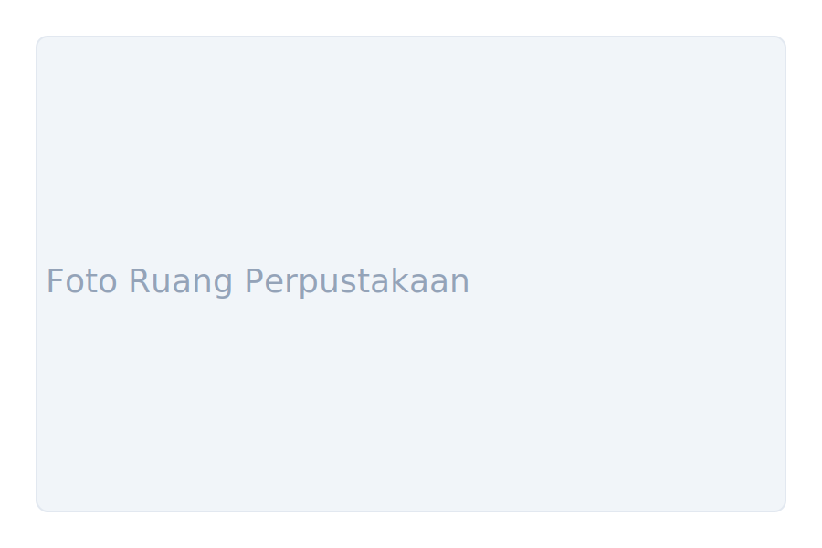

Koleksi Unggulan
Beberapa sampel buku yang tersedia di perpustakaan.
Galeri

Kontak & Info
Alamat: Jl. Raya Pebayuran No.12, Kertasari, Kec. Pebayuran, Kabupaten Bekasi, Jawa Barat 17710
Telepon: (021) - (isi jika ada)
Email: perpustakaan@smpn1pebayuran.sch.id
Jam Layanan
- Senin - Jumat: 07.00 - 15.00
- Sabtu: 08.00 - 12.00
- Minggu: Libur